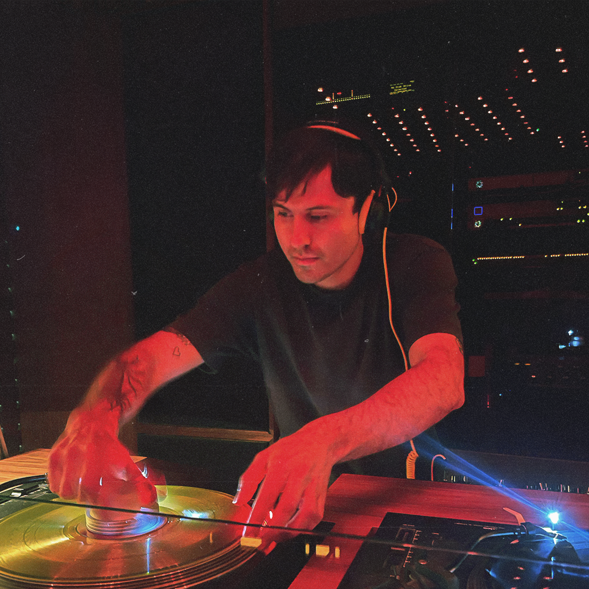
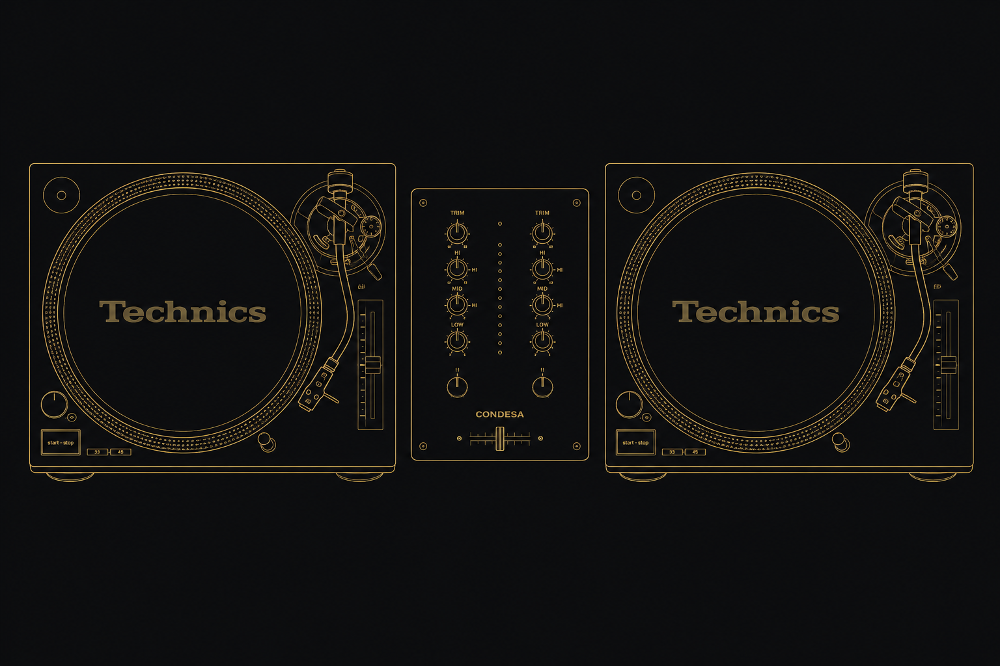

Press Kit
DJ · Producer · Melbourne, AU

About
Juan Gutiérrez, also known as Rupert is Robert, is a computer music technologist and multimedia producer from Medellín, Colombia — now based in Melbourne, Australia.
His creative journey began in 2009, experimenting intermittently as a DJ while searching for his place in the music scene. Despite his passion for DJing, he often found himself drawn to other areas: VJ work, and sound & light system operation.
As his career evolved, Juan Camilo found his niche focusing on disco, house, italo disco, electro, and deep house. Embracing his role as a crate digger, he is passionate about discovering and sharing musical gems with audiences eager to dance and enjoy high-quality tunes.
Rupert is Robert combines a deep knowledge of both digital and analog instruments, often integrating them with innovative field recording techniques to craft immersive sonic landscapes. His ability to blend technical expertise with artistic intuition allows him to create intricate soundscapes that transport listeners to evocative and exciting realms.
Technical
A minimum of 2 channels is required. Ideally a rotary mixer is preferred, but not mandatory.
Two Technics SL-1200 turntables of any model. If turntables are not available, two CDJ units from the Nexus series or higher are acceptable.
The DJ booth should be equipped with independent monitoring for the DJ.
Adequate lighting for the DJ area is necessary.
A solid and stable base for the turntables is required.
Please note that I am flexible regarding the specific model of CDJ units.
